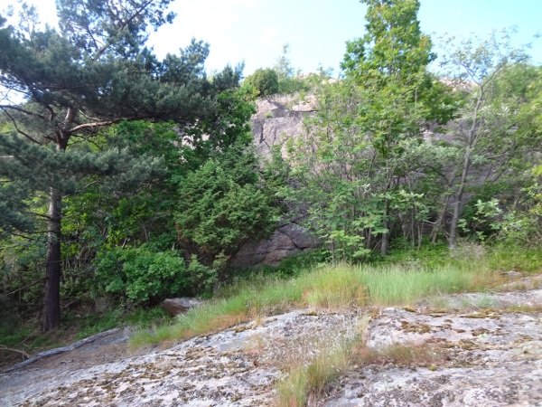

Lat: 57.66439 Long: 12.00622
I centrala Mölndal finns det många småklippor som här samlas på samma sida.
Denna outvecklade klippa ligger på södra kanten av Safjället, vid Bifrostgatan. Trots att den är ganska hög är det svårt att se den från vägen på grund av träd.
246px
400px
<div style="margin: 0 0 1em 1em; float: right">
</div>
Vägbeskrivning: Klippan ligger vid Bifrostgatan, mellan Toltorpsgatan och Lackarebäcksmotet. Klippan syns nästan inte från vägen, men när du är vid en gräsplätt som ser ut som en igenvuxen trädgård är du framme. Här kan du parkera cykeln och gå in bakom buskarna så ser du strax klippan.
Med bil: E6 från Göteborg, ta av vid Lackarebäcksmotet. Parkera vid någon av korsningarna eller vid en annan gata då man inte kan stå längs Bifrostgatan.
Kollektivtrafik: Flera spårvagnar och bussar går till hållplatsen Lackarebäck som är närmast. Busshållplatsen Bifrost är också nära.
Vägbeskrivning: Parkera på Axgatan, följ stig mot Västerberget, om du möter ett nätstaket med en stängd grind har du kommit rätt, ta dig runt staketet från höger (högt upp åt höger slutar staketet), gå på stigen och gå upp höger när du börjar se granit, promenera längs med tills du hittar lederna, ca 300-400 meter.
kategori:Saknar skiss
kategori:Saknar vägbeskrivning
kategori:Saknar koordinater
kategori:Saknar skrivarformatering
Category:Göteborg